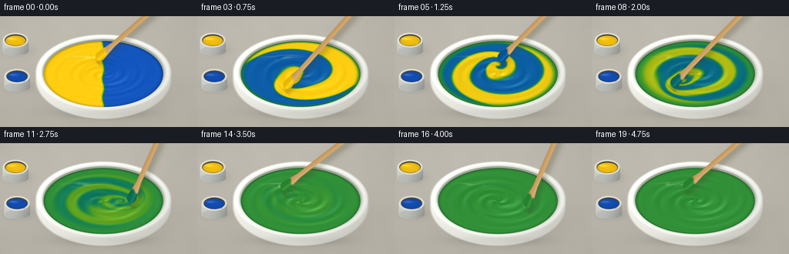
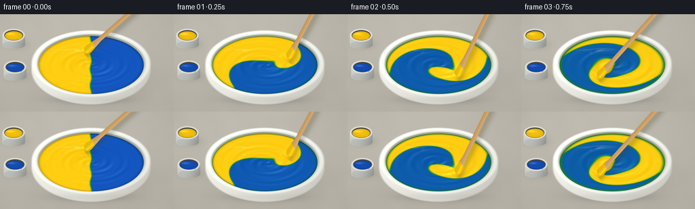

CODING AGENTS AS PIXEL WORLD MODELS
traex/GPT-6.1-Sol · material_0000
点击播放 · 原生 RGB 像素
逐轮保存的候选
回放视频、检查图与代码变化。
每份候选均可单独播放。实际图片检查记录在下方工具轨迹中。
候选 01播放与检查图
点击播放 · 原生 RGB 像素


展开代码变化
--- 上一保存版本
+++ 本次保存版本
@@ -0,0 +1,302 @@
+"""Procedural RGB macro shot of two pigments being stirred into green paint.
+Only numpy, Pillow and local output helpers are used.
+"""
+from pathlib import Path
+import json
+import numpy as np
+from PIL import Image, ImageDraw, ImageFilter
+import artifact_io
+
+ROOT = Path(__file__).resolve().parent
+SPEC = json.loads((ROOT / 'task_spec.json').read_text())
+W,H,N = SPEC['width'],SPEC['height'],SPEC['frames']
+SS=3
+SW,SH=W*SS,H*SS
+Y,X=np.mgrid[0:SH,0:SW].astype(np.float32)/SS
+rng=np.random.default_rng(4821)
+
+
+def blend(img, rgb, a):
+ a=np.clip(a,0,1)[...,None]
+ return img*(1-a)+np.asarray(rgb)*a
+
+
+def ellipse_distance(cx,cy,rx,ry):
+ return np.sqrt(((X-cx)/rx)**2+((Y-cy)/ry)**2)
+
+
+def noise_image(size, blur):
+ raw=rng.integers(0,256,size=(size[1],size[0]),dtype=np.uint8)
+ im=Image.fromarray(raw).resize((SW,SH),Image.Resampling.BICUBIC)
+ if blur: im=im.filter(ImageFilter.GaussianBlur(blur*SS))
+ return (np.asarray(im).astype(np.float32)-128)/128
+
+# A warm, quiet studio surface with no animated camera or background texture.
+texture=noise_image((SW,SH),.25)
+cloud=noise_image((32,18),5)
+light=8*np.exp(-((X-80)**2/160**2+(Y-8)**2/100**2))
+vignette=-7*((X-128)/180)**2-4*((Y-65)/100)**2
+base=np.zeros((SH,SW,3),np.float32)
+base[:]=[185,180,169]
+base+= (light+vignette+1.9*texture+2*cloud)[...,None]
+# Soft, directional bowl cast shadow.
+shadow=np.exp(-(((X-139)/92)**2+((Y-101)/43)**2)*2.1)
+base=blend(base,[91,87,76],shadow*.32)
+contact=np.exp(-(((X-135)/74)**2+((Y-126)/9)**2)*2.5)
+base=blend(base,[65,63,55],contact*.32)
+
+
+def small_pot(bg,cx,cy,pigment):
+ """Small open pigment pots, slightly behind the focal plane."""
+ out=bg.copy()
+ d=ellipse_distance(cx+4,cy+13,20,9)
+ out=blend(out,[76,70,62],.21*np.exp(-d*d*1.7))
+ dx=(X-cx)/17
+ side=((np.abs(dx)<1)&(Y>cy)&(Y<cy+14+6*np.sqrt(np.maximum(0,1-dx*dx)))).astype(float)
+ sidecol=np.zeros_like(out)+[181,183,179]
+ sidecol+=(20*np.cos(dx*1.5)-27*dx-0.8*(Y-cy))[...,None]
+ out=blend(out,sidecol,side)
+ foot=ellipse_distance(cx,cy+14,17,6)
+ out=blend(out,[142,144,137],np.clip((1-foot)*SS*3,0,1)*.22)
+ r=ellipse_distance(cx,cy,17,10)
+ out=blend(out,[222,220,207],np.clip((1-r)*SS*5,0,1))
+ r2=ellipse_distance(cx,cy,14.4,7.9)
+ out=blend(out,[70,69,62],np.clip((1-r2)*SS*5,0,1))
+ r3=ellipse_distance(cx,cy+.7,13.5,6.8)
+ col=np.zeros_like(out)+pigment
+ col*= (.86+.12*np.sqrt(np.maximum(0,1-r3*r3)))[...,None]
+ glow=np.exp(-((X-(cx-5))/6)**2-((Y-(cy-2))/1.5)**2)
+ col+=glow[...,None]*36
+ out=blend(out,col,np.clip((1-r3)*SS*5,0,1))
+ # Hairline edge reflections and small dried traces on the rim.
+ ring=np.exp(-((r-.95)/.015)**2)*np.clip(.4-(X-cx)/35,0,.8)
+ out=blend(out,[252,249,232],ring*.7)
+ trace=np.exp(-((X-(cx+9))/1.1)**2-((Y-(cy+5))/2)**2)
+ out=blend(out,pigment,trace*.6)
+ return out
+
+base=small_pot(base,20,31,[248,196,14])
+base=small_pot(base,22,78,[20,78,180])
+
+CX,CY=134.,75.
+RX,RY=78.,43.
+# Ceramic bowl: shaded outside, a softly rolled lip, and inner well.
+rbody=ellipse_distance(CX,CY+7,89,52)
+xbody=(X-CX)/89
+ybody=(Y-CY-7)/52
+body=np.zeros_like(base)+[224,224,216]
+body+=(9*np.sqrt(np.maximum(0,1-rbody*rbody))-19*xbody-13*ybody)[...,None]
+body-=np.exp(-((Y-126)/4.5)**2)[...,None]*7
+base=blend(base,body,np.clip((1-rbody)*SS*10,0,1))
+rim=ellipse_distance(CX,CY-2,89,50)
+rim_inner=ellipse_distance(CX,CY-2,80.5,44.1)
+# Outside rim is drawn as the upper surface of a round ceramic lip.
+phi=np.arctan2((Y-(CY-2))/50,(X-CX)/89)
+lip_t=np.clip((rim-.902)/.098,0,1)
+lipn=np.sin(np.pi*lip_t)
+rimcol=np.zeros_like(base)+[227,229,222]
+rimcol+=(17*lipn - 12*np.cos(phi)-8*np.sin(phi))[...,None]
+rimcol+= (9*np.exp(-((lip_t-.30)/.18)**2))[...,None]
+base=blend(base,rimcol,np.clip((1-rim)*SS*10,0,1))
+inner=np.zeros_like(base)+[165,172,158]
+inner+=(30*np.clip((Y-CY)/43,0,1)-11*np.clip((CY-Y)/43,0,1))[...,None]
+base=blend(base,inner,np.clip((1-rim_inner)*SS*10,0,1))
+# Fine ring at the inner lip and a broad soft rim highlight.
+inneredge=np.exp(-((rim_inner-1.0)/.009)**2)
+base=blend(base,[251,250,240],inneredge*.4*np.clip(.7-.4*np.cos(phi),0,1))
+
+# Concentration field on a disk. Semi-Lagrangian advection makes actual colored
+# filaments rather than cross-fading a static yellow/blue picture.
+G=360
+gy,gx=np.mgrid[0:G,0:G].astype(np.float32)
+u=gx/(G-1)*2-1
+v=gy/(G-1)*2-1
+r2=u*u+v*v
+inside=r2<=1
+c=(.5-.5*np.tanh((u+.014*np.sin(v*11))/.016)).astype(np.float32)
+c[~inside]=.5
+
+
+def sample(field,xx,yy):
+ xx=np.clip(xx,0,G-1.001)
+ yy=np.clip(yy,0,G-1.001)
+ ix=xx.astype(np.int32); iy=yy.astype(np.int32)
+ fx=xx-ix; fy=yy-iy
+ return ((1-fx)*(1-fy)*field[iy,ix]+fx*(1-fy)*field[iy,ix+1]
+ +(1-fx)*fy*field[iy+1,ix]+fx*fy*field[iy+1,ix+1])
+
+
+def tip(t):
+ # Four brisk full revolutions with slight variation in the orbit.
+ a=-1.8+5.25*t
+ rr=.47+.045*np.sin(t*3.7)
+ return rr*np.cos(a),rr*np.sin(a)
+
+
+def advance(field,t,dt):
+ # Differential rotation stretches the interface. The moving off-axis
+ # vortex folds it; fade at the wall keeps paint within the bowl.
+ tu,tv=tip(t)
+ omega=2.5+7.0*np.maximum(0,1-r2)**1.5
+ du=u-tu; dv=v-tv
+ q=np.exp(-(du*du+dv*dv)/.105)
+ edge=np.maximum(0,1-r2)
+ local=8*q*edge**2
+ velu=-omega*v-local*dv
+ velv=omega*u+local*du
+ # Add a divergence-free stream-function disturbance caused by the paddle.
+ psi=.10*q*edge**2
+ dpsiy,dpsix=np.gradient(psi,2/(G-1))
+ velu+=dpsiy;velv-=dpsix
+ ax=u-dt*velu; ay=v-dt*velv
+ rr=np.sqrt(ax*ax+ay*ay)
+ ax/=np.maximum(1,rr/.998); ay/=np.maximum(1,rr/.998)
+ new=sample(field,(ax+1)*(G-1)/2,(ay+1)*(G-1)/2)
+ lap=(np.roll(new,1,0)+np.roll(new,-1,0)+np.roll(new,1,1)+np.roll(new,-1,1)-4*new)
+ new+=.10*lap
+ # Unresolved fine lamellae become a thoroughly blended pigment.
+ rate=.08+max(0,t-1.2)*.65+max(0,t-2.5)*1.3
+ new=.5+(new-.5)*np.exp(-rate*dt)
+ new[~inside]=.5
+ new[inside]+= .5-new[inside].mean()
+ return np.clip(new,0,1).astype(np.float32)
+
+pu=(X-CX)/RX
+pv=(Y-CY)/RY
+pr=np.sqrt(pu*pu+pv*pv)
+theta=np.arctan2(pv,pu)
+paint_alpha=np.clip((1-pr)*SS*40,0,1)
+field_x=(pu+1)*(G-1)/2
+field_y=(pv+1)*(G-1)/2
+
+
+def paint_surface(t,conc):
+ p=sample(conc,field_x,field_y)
+ # Subtractive pigment response: yellow + blue make a saturated green,
+ # not the gray/cyan of a naive RGB average.
+ yellow=np.array([248.,198.,12.])
+ blue=np.array([13.,79.,184.])
+ pigment=p[...,None]*yellow+(1-p[...,None])*blue
+ pigment-= (4*p*(1-p))[...,None]*np.array([87.5,1.5,48.])
+ tu,tv=tip(t)
+ fade=np.clip(1-pr*pr,0,1)
+ # Thick glossy paint has a slight central depression, spiral corrugations,
+ # and an elevated wake immediately behind the immersed stirring paddle.
+ amp=.0018+.0022*(1-np.exp(-t*1.5))
+ phase=28*pr+3*theta-7*t
+ h=-.021*np.exp(-pr*pr/.17)
+ h+=amp*np.sin(phase)*fade
+ h+=.0011*np.sin(48*pr+2*theta-9*t)*fade
+ h+=.011*np.exp(-((pu-tu)**2+(pv-tv)**2)/.019)
+ h+=.003*np.exp(-((pu+.23)**2+pv**2)/.22)*np.exp(-t)
+ dhy,dhx=np.gradient(h,1/(RY*SS),1/(RX*SS))
+ # Height normals are oriented toward the high softbox at upper left.
+ nx=-dhx; ny=-dhy; nz=np.ones_like(nx)
+ norm=np.sqrt(nx*nx+ny*ny+nz*nz)
+ nx/=norm;ny/=norm;nz/=norm
+ diffuse=np.clip(-.36*nx-.46*ny+.811*nz,0,1)
+ color=pigment*(.82+.23*diffuse)[...,None]
+ # A narrow overhead reflected source follows the flowing raised ridges.
+ specdot=np.clip(-.12*nx-.17*ny+.978*nz,0,1)
+ spec=(specdot**110)*.14+(specdot**24)*.028
+ color+=spec[...,None]*np.array([220,235,202])
+ # Local reflected softbox glints on the far-left surface, subtly distorted
+ # by the slope. They make the opaque paint look wet, not translucent.
+ hu=pu+nx*.6;hv=pv+ny*.6
+ refl=np.exp(-((hu+.39)/.35)**2-((hv+.52)/.026)**2)*.35
+ refl+=np.exp(-((hu+.39)/.28)**2-((hv+.43)/.014)**2)*.11
+ color=blend(color,[248,252,219],refl*fade)
+ edge_shadow=np.exp(-((pr-.995)/.035)**2)*.30
+ edge_shadow*= .6+.4*np.clip(-pv,0,1)
+ color*= (1-edge_shadow)[...,None]
+ # Fine surface texture is stable in space and only a fraction of a pixel.
+ color+=(texture*.42)[...,None]
+ return np.clip(color,0,255),p
+
+
+def polygon_mask(points,blur=0):
+ im=Image.new('L',(SW,SH)); d=ImageDraw.Draw(im)
+ d.polygon([(round(x*SS),round(y*SS)) for x,y in points],fill=255)
+ if blur: im=im.filter(ImageFilter.GaussianBlur(blur*SS))
+ return np.asarray(im).astype(np.float32)/255
+
+
+def paddle_geometry(t):
+ tu,tv=tip(t)
+ px=CX+RX*tu;py=CY+RY*tv
+ # The wooden mixing paddle is held above the frame, inclined down into
+ # the paint. Its lower, rounded end moves in a tight circular orbit.
+ ax=215+2*np.sin(t*1.9);ay=-23
+ direction=np.array([px-ax,py-ay]);length=np.linalg.norm(direction)
+ direction/=length; normal=np.array([-direction[1],direction[0]])
+ return np.array([ax,ay]),np.array([px,py]),direction,normal,length
+
+
+def draw_paddle(img,t,p):
+ a,b,d,n,L=paddle_geometry(t)
+ # Signed distance to the tapered strip, with a rounded bottom.
+ dx=X-a[0];dy=Y-a[1]
+ s=dx*d[0]+dy*d[1]
+ q=dx*n[0]+dy*n[1]
+ width=3.4+3.0*np.clip((s-(L-28))/22,0,1)
+ radius=np.sqrt(q*q+np.maximum(s-(L-5.5),0)**2)
+ strip=(s>=0)&(s<=L-5.5)
+ mask=np.where(strip,np.clip((width-np.abs(q))*SS,0,1),np.clip((6.2-radius)*SS,0,1)*(s>L-5.5))
+ # Shaft soft shadow. Only the lower shadow belongs on the paint; the
+ # remaining part is cast over the rim and studio surface.
+ shdx=X-a[0]-4;shdy=Y-a[1]-4
+ shs=shdx*d[0]+shdy*d[1];shq=shdx*n[0]+shdy*n[1]
+ sh=np.exp(-(shq/(4.8+1.8*(1-np.clip(shs/L,0,1))))**2)
+ sh*=((shs>0)&(shs<L+4))*.24
+ img=blend(img,[65,66,41],sh)
+ # Birch grain follows the stirrer rather than the screen.
+ grain=np.sin(q*3.6+.026*s+1.2*np.sin(s*.06))
+ grain+=.42*np.sin(q*8.9+s*.025)
+ wood=np.zeros_like(img)+[201,157,98]
+ wood+=(3.2*grain+8*np.exp(-((q+1.9)/2.0)**2)-12*(q/7))[...,None]
+ wood+=np.stack([.6*s/L, .5*s/L, .3*s/L],-1)*5
+ side=np.clip((np.abs(q)-width+.9)/.9,0,1)
+ wood-=side[...,None]*np.array([30,27,18])
+ # The immersed lower 16 mm carry the current mixture, with a curved wet
+ # line and a small residual yellow/blue streak during the first strokes.
+ wet=np.clip((s-(L-17)+1.8*np.sin(q*.5))/3,0,1)
+ # Sample paint around the end, keeping the coating coherent with mixing.
+ ctip=float(sample(p,np.array([b[0]*SS]),np.array([b[1]*SS]))[0]) if False else float(p[int(np.clip(b[1]*SS,0,SH-1)),int(np.clip(b[0]*SS,0,SW-1))])
+ coat=ctip*np.array([248,198,12])+(1-ctip)*np.array([13,79,184])-4*ctip*(1-ctip)*np.array([87.5,1.5,48])
+ coat=coat*(.92+.12*np.exp(-((q+1.5)/3)**2))[...,None] if False else np.broadcast_to(coat,wood.shape).copy()
+ coat*= (.93+.11*np.exp(-((q+1.5)/2)**2))[...,None]
+ coat+=np.exp(-((q+2.3)/.65)**2)[...,None]*18
+ wood=wood*(1-wet[...,None])+coat*wet[...,None]
+ img=blend(img,wood,mask)
+ # Curved fluid meniscus hides the last few millimeters of the stick,
+ # sealing it into the surface instead of floating above it.
+ wake_center=b+d*2
+ uu=((X-wake_center[0])*n[0]+(Y-wake_center[1])*n[1])/8.3
+ vv=((X-wake_center[0])*d[0]+(Y-wake_center[1])*d[1])/2.2
+ wr=np.sqrt(uu*uu+vv*vv)
+ meniscus=np.exp(-((wr-1)/.12)**2)*(vv>.0)*paint_alpha
+ img=blend(img,coat*.92+12,meniscus*.56)
+ return img
+
+frames=[]
+time=0.0
+for i in range(N):
+ target=i/SPEC['fps']
+ if i:
+ steps=14
+ dt=(target-time)/steps
+ for j in range(steps):
+ c=advance(c,time+dt*.5,dt)
+ time+=dt
+ surface,p=paint_surface(target,c)
+ image=blend(base,surface,paint_alpha)
+ image=draw_paddle(image,target,p)
+ # Subtle camera response, not a stylistic filter.
+ image=np.clip(image,0,255).astype(np.uint8)
+ im=Image.fromarray(image).resize((W,H),Image.Resampling.LANCZOS)
+ frames.append(np.asarray(im))
+
+frames=np.stack(frames).astype(np.uint8)
+artifact_io.save(frames,ROOT)
+print('Saved',frames.shape,'RGB frames')
+print('Final yellow fraction:',float(c[inside].mean()),'std:',float(c[inside].std()))
可观测工具轨迹
实际执行的命令与返回图片。
命令 1exit 0
/bin/bash -lc 'ls -la && cat prompt.txt && cat GENERATION_RULES.md && cat task_spec.json'
命令 2exit 0
/bin/bash -lc 'cat artifact_io.py && cat player_template.html'
命令 3exit 0
/bin/bash -lc "cat > generate.py <<'PY'
\"\"\"Procedural RGB macro shot of two pigments being stirred into green paint.
Only numpy, Pillow and local output helpers are used.
\"\"\"
from pathlib import Path
import json
import numpy as np
from PIL import Image, ImageDraw, ImageFilter
import artifact_io
ROOT = Path(__file__).resolve().parent
SPEC = json.loads((ROOT / 'task_spec.json').read_text())
W,H,N = SPEC['width'],SPEC['height'],SPEC['frames']
SS=3
SW,SH=W*SS,H*SS
Y,X=np.mgrid[0:SH,0:SW].astype(np.float32)/SS
rng=np.random.default_rng(4821)
def blend(img, rgb, a):
a=np.clip(a,0,1)[...,None]
return img*(1-a)+np.asarray(rgb)*a
def ellipse_distance(cx,cy,rx,ry):
return np.sqrt(((X-cx)/rx)**2+((Y-cy)/ry)**2)
def noise_image(size, blur):
raw=rng.integers(0,256,size=(size[1],size[0]),dtype=np.uint8)
im=Image.fromarray(raw).resize((SW,SH),Image.Resampling.BICUBIC)
if blur: im=im.filter(ImageFilter.GaussianBlur(blur*SS))
return (np.asarray(im).astype(np.float32)-128)/128
# A warm, quiet studio surface with no animated camera or background texture.
texture=noise_image((SW,SH),.25)
cloud=noise_image((32,18),5)
light=8*np.exp(-((X-80)**2/160**2+(Y-8)**2/100**2))
vignette=-7*((X-128)/180)**2-4*((Y-65)/100)**2
base=np.zeros((SH,SW,3),np.float32)
base[:]=[185,180,169]
base+= (light+vignette+1.9*texture+2*cloud)[...,None]
# Soft, directional bowl cast shadow.
shadow=np.exp(-(((X-139)/92)**2+((Y-101)/43)**2)*2.1)
base=blend(base,[91,87,76],shadow*.32)
contact=np.exp(-(((X-135)/74)**2+((Y-126)/9)**2)*2.5)
base=blend(base,[65,63,55],contact*.32)
def small_pot(bg,cx,cy,pigment):
\"\"\"Small open pigment pots, slightly behind the focal plane.\"\"\"
out=bg.copy()
d=ellipse_distance(cx+4,cy+13,20,9)
out=blend(out,[76,70,62],.21*np.exp(-d*d*1.7))
dx=(X-cx)/17
side=((np.abs(dx)<1)&(Y>cy)&(Y<cy+14+6*np.sqrt(np.maximum(0,1-dx*dx)))).astype(float)
sidecol=np.zeros_like(out)+[181,183,179]
sidecol+=(20*np.cos(dx*1.5)-27*dx-0.8*(Y-cy))[...,None]
out=blend(out,sidecol,side)
foot=ellipse_distance(cx,cy+14,17,6)
out=blend(out,[142,144,137],np.clip((1-foot)*SS*3,0,1)*.22)
r=ellipse_distance(cx,cy,17,10)
out=blend(out,[222,220,207],np.clip((1-r)*SS*5,0,1))
r2=ellipse_distance(cx,cy,14.4,7.9)
out=blend(out,[70,69,62],np.clip((1-r2)*SS*5,0,1))
r3=ellipse_distance(cx,cy+.7,13.5,6.8)
col=np.zeros_like(out)+pigment
col*= (.86+.12*np.sqrt(np.maximum(0,1-r3*r3)))[...,None]
glow=np.exp(-((X-(cx-5))/6)**2-((Y-(cy-2))/1.5)**2)
col+=glow[...,None]*36
out=blend(out,col,np.clip((1-r3)*SS*5,0,1))
# Hairline edge reflections and small dried traces on the rim.
ring=np.exp(-((r-.95)/.015)**2)*np.clip(.4-(X-cx)/35,0,.8)
out=blend(out,[252,249,232],ring*.7)
trace=np.exp(-((X-(cx+9))/1.1)**2-((Y-(cy+5))/2)**2)
out=blend(out,pigment,trace*.6)
return out
base=small_pot(base,20,31,[248,196,14])
base=small_pot(base,22,78,[20,78,180])
CX,CY=134.,75.
RX,RY=78.,43.
# Ceramic bowl: shaded outside, a softly rolled lip, and inner well.
rbody=ellipse_distance(CX,CY+7,89,52)
xbody=(X-CX)/89
ybody=(Y-CY-7)/52
body=np.zeros_like(base)+[224,224,216]
body+=(9*np.sqrt(np.maximum(0,1-rbody*rbody))-19*xbody-13*ybody)[...,None]
body-=np.exp(-((Y-126)/4.5)**2)[...,None]*7
base=blend(base,body,np.clip((1-rbody)*SS*10,0,1))
rim=ellipse_distance(CX,CY-2,89,50)
rim_inner=ellipse_distance(CX,CY-2,80.5,44.1)
# Outside rim is drawn as the upper surface of a round ceramic lip.
phi=np.arctan2((Y-(CY-2))/50,(X-CX)/89)
lip_t=np.clip((rim-.902)/.098,0,1)
lipn=np.sin(np.pi*lip_t)
rimcol=np.zeros_like(base)+[227,229,222]
rimcol+=(17*lipn - 12*np.cos(phi)-8*np.sin(phi))[...,None]
rimcol+= (9*np.exp(-((lip_t-.30)/.18)**2))[...,None]
base=blend(base,rimcol,np.clip((1-rim)*SS*10,0,1))
inner=np.zeros_like(base)+[165,172,158]
inner+=(30*np.clip((Y-CY)/43,0,1)-11*np.clip((CY-Y)/43,0,1))[...,None]
base=blend(base,inner,np.clip((1-rim_inner)*SS*10,0,1))
# Fine ring at the inner lip and a broad soft rim highlight.
inneredge=np.exp(-((rim_inner-1.0)/.009)**2)
base=blend(base,[251,250,240],inneredge*.4*np.clip(.7-.4*np.cos(phi),0,1))
# Concentration field on a disk. Semi-Lagrangian advection makes actual colored
# filaments rather than cross-fading a static yellow/blue picture.
G=360
gy,gx=np.mgrid[0:G,0:G].astype(np.float32)
u=gx/(G-1)*2-1
v=gy/(G-1)*2-1
r2=u*u+v*v
inside=r2<=1
c=(.5-.5*np.tanh((u+.014*np.sin(v*11))/.016)).astype(np.float32)
c[~inside]=.5
def sample(field,xx,yy):
xx=np.clip(xx,0,G-1.001)
yy=np.clip(yy,0,G-1.001)
ix=xx.astype(np.int32); iy=yy.astype(np.int32)
fx=xx-ix; fy=yy-iy
return ((1-fx)*(1-fy)*field[iy,ix]+fx*(1-fy)*field[iy,ix+1]
+(1-fx)*fy*field[iy+1,ix]+fx*fy*field[iy+1,ix+1])
def tip(t):
# Four brisk full revolutions with slight variation in the orbit.
a=-1.8+5.25*t
rr=.47+.045*np.sin(t*3.7)
return rr*np.cos(a),rr*np.sin(a)
def advance(field,t,dt):
# Differential rotation stretches the interface. The moving off-axis
# vortex folds it; fade at the wall keeps paint within the bowl.
tu,tv=tip(t)
omega=2.5+7.0*np.maximum(0,1-r2)**1.5
du=u-tu; dv=v-tv
q=np.exp(-(du*du+dv*dv)/.105)
edge=np.maximum(0,1-r2)
local=8*q*edge**2
velu=-omega*v-local*dv
velv=omega*u+local*du
# Add a divergence-free stream-function disturbance caused by the paddle.
psi=.10*q*edge**2
dpsiy,dpsix=np.gradient(psi,2/(G-1))
velu+=dpsiy;velv-=dpsix
ax=u-dt*velu; ay=v-dt*velv
rr=np.sqrt(ax*ax+ay*ay)
ax/=np.maximum(1,rr/.998); ay/=np.maximum(1,rr/.998)
new=sample(field,(ax+1)*(G-1)/2,(ay+1)*(G-1)/2)
lap=(np.roll(new,1,0)+np.roll(new,-1,0)+np.roll(new,1,1)+np.roll(new,-1,1)-4*new)
new+=.10*lap
# Unresolved fine lamellae become a thoroughly blended pigment.
rate=.08+max(0,t-1.2)*.65+max(0,t-2.5)*1.3
new=.5+(new-.5)*np.exp(-rate*dt)
new[~inside]=.5
new[inside]+= .5-new[inside].mean()
return np.clip(new,0,1).astype(np.float32)
pu=(X-CX)/RX
pv=(Y-CY)/RY
pr=np.sqrt(pu*pu+pv*pv)
theta=np.arctan2(pv,pu)
paint_alpha=np.clip((1-pr)*SS*40,0,1)
field_x=(pu+1)*(G-1)/2
field_y=(pv+1)*(G-1)/2
def paint_surface(t,conc):
p=sample(conc,field_x,field_y)
# Subtractive pigment response: yellow + blue make a saturated green,
# not the gray/cyan of a naive RGB average.
yellow=np.array([248.,198.,12.])
blue=np.array([13.,79.,184.])
pigment=p[...,None]*yellow+(1-p[...,None])*blue
pigment-= (4*p*(1-p))[...,None]*np.array([87.5,1.5,48.])
tu,tv=tip(t)
fade=np.clip(1-pr*pr,0,1)
# Thick glossy paint has a slight central depression, spiral corrugations,
# and an elevated wake immediately behind the immersed stirring paddle.
amp=.0018+.0022*(1-np.exp(-t*1.5))
phase=28*pr+3*theta-7*t
h=-.021*np.exp(-pr*pr/.17)
h+=amp*np.sin(phase)*fade
h+=.0011*np.sin(48*pr+2*theta-9*t)*fade
h+=.011*np.exp(-((pu-tu)**2+(pv-tv)**2)/.019)
h+=.003*np.exp(-((pu+.23)**2+pv**2)/.22)*np.exp(-t)
dhy,dhx=np.gradient(h,1/(RY*SS),1/(RX*SS))
# Height normals are oriented toward the high softbox at upper left.
nx=-dhx; ny=-dhy; nz=np.ones_like(nx)
norm=np.sqrt(nx*nx+ny*ny+nz*nz)
nx/=norm;ny/=norm;nz/=norm
diffuse=np.clip(-.36*nx-.46*ny+.811*nz,0,1)
color=pigment*(.82+.23*diffuse)[...,None]
# A narrow overhead reflected source follows the flowing raised ridges.
specdot=np.clip(-.12*nx-.17*ny+.978*nz,0,1)
spec=(specdot**110)*.14+(specdot**24)*.028
color+=spec[...,None]*np.array([220,235,202])
# Local reflected softbox glints on the far-left surface, subtly distorted
# by the slope. They make the opaque paint look wet, not translucent.
hu=pu+nx*.6;hv=pv+ny*.6
refl=np.exp(-((hu+.39)/.35)**2-((hv+.52)/.026)**2)*.35
refl+=np.exp(-((hu+.39)/.28)**2-((hv+.43)/.014)**2)*.11
color=blend(color,[248,252,219],refl*fade)
edge_shadow=np.exp(-((pr-.995)/.035)**2)*.30
edge_shadow*= .6+.4*np.clip(-pv,0,1)
color*= (1-edge_shadow)[...,None]
# Fine surface texture is stable in space and only a fraction of a pixel.
color+=(texture*.42)[...,None]
return np.clip(color,0,255),p
def polygon_mask(points,blur=0):
im=Image.new('L',(SW,SH)); d=ImageDraw.Draw(im)
d.polygon([(round(x*SS),round(y*SS)) for x,y in points],fill=255)
if blur: im=im.filter(ImageFilter.GaussianBlur(blur*SS))
return np.asarray(im).astype(np.float32)/255
def paddle_geometry(t):
tu,tv=tip(t)
px=CX+RX*tu;py=CY+RY*tv
# The wooden mixing paddle is held above the frame, inclined down into
# the paint. Its lower, rounded end moves in a tight circular orbit.
ax=215+2*np.sin(t*1.9);ay=-23
direction=np.array([px-ax,py-ay]);length=np.linalg.norm(direction)
direction/=length; normal=np.array([-direction[1],direction[0]])
return np.array([ax,ay]),np.array([px,py]),direction,normal,length
def draw_paddle(img,t,p):
a,b,d,n,L=paddle_geometry(t)
# Signed distance to the tapered strip, with a rounded bottom.
dx=X-a[0];dy=Y-a[1]
s=dx*d[0]+dy*d[1]
q=dx*n[0]+dy*n[1]
width=3.4+3.0*np.clip((s-(L-28))/22,0,1)
radius=np.sqrt(q*q+np.maximum(s-(L-5.5),0)**2)
strip=(s>=0)&(s<=L-5.5)
mask=np.where(strip,np.clip((width-np.abs(q))*SS,0,1),np.clip((6.2-radius)*SS,0,1)*(s>L-5.5))
# Shaft soft shadow. Only the lower shadow belongs on the paint; the
# remaining part is cast over the rim and studio surface.
shdx=X-a[0]-4;shdy=Y-a[1]-4
shs=shdx*d[0]+shdy*d[1];shq=shdx*n[0]+shdy*n[1]
sh=np.exp(-(shq/(4.8+1.8*(1-np.clip(shs/L,0,1))))**2)
sh*=((shs>0)&(shs<L+4))*.24
img=blend(img,[65,66,41],sh)
# Birch grain follows the stirrer rather than the screen.
grain=np.sin(q*3.6+.026*s+1.2*np.sin(s*.06))
grain+=.42*np.sin(q*8.9+s*.025)
wood=np.zeros_like(img)+[201,157,98]
wood+=(3.2*grain+8*np.exp(-((q+1.9)/2.0)**2)-12*(q/7))[...,None]
wood+=np.stack([.6*s/L, .5*s/L, .3*s/L],-1)*5
side=np.clip((np.abs(q)-width+.9)/.9,0,1)
wood-=side[...,None]*np.array([30,27,18])
# The immersed lower 16 mm carry the current mixture, with a curved wet
# line and a small residual yellow/blue streak during the first strokes.
wet=np.clip((s-(L-17)+1.8*np.sin(q*.5))/3,0,1)
# Sample paint around the end, keeping the coating coherent with mixing.
ctip=float(sample(p,np.array([b[0]*SS]),np.array([b[1]*SS]))[0]) if False else float(p[int(np.clip(b[1]*SS,0,SH-1)),int(np.clip(b[0]*SS,0,SW-1))])
coat=ctip*np.array([248,198,12])+(1-ctip)*np.array([13,79,184])-4*ctip*(1-ctip)*np.array([87.5,1.5,48])
coat=coat*(.92+.12*np.exp(-((q+1.5)/3)**2))[...,None] if False else np.broadcast_to(coat,wood.shape).copy()
coat*= (.93+.11*np.exp(-((q+1.5)/2)**2))[...,None]
coat+=np.exp(-((q+2.3)/.65)**2)[...,None]*18
wood=wood*(1-wet[...,None])+coat*wet[...,None]
img=blend(img,wood,mask)
# Curved fluid meniscus hides the last few millimeters of the stick,
# sealing it into the surface instead of floating above it.
wake_center=b+d*2
uu=((X-wake_center[0])*n[0]+(Y-wake_center[1])*n[1])/8.3
vv=((X-wake_center[0])*d[0]+(Y-wake_center[1])*d[1])/2.2
wr=np.sqrt(uu*uu+vv*vv)
meniscus=np.exp(-((wr-1)/.12)**2)*(vv>.0)*paint_alpha
img=blend(img,coat*.92+12,meniscus*.56)
return img
frames=[]
time=0.0
for i in range(N):
target=i/SPEC['fps']
if i:
steps=14
dt=(target-time)/steps
for j in range(steps):
c=advance(c,time+dt*.5,dt)
time+=dt
surface,p=paint_surface(target,c)
image=blend(base,surface,paint_alpha)
image=draw_paddle(image,target,p)
# Subtle camera response, not a stylistic filter.
image=np.clip(image,0,255).astype(np.uint8)
im=Image.fromarray(image).resize((W,H),Image.Resampling.LANCZOS)
frames.append(np.asarray(im))
frames=np.stack(frames).astype(np.uint8)
artifact_io.save(frames,ROOT)
print('Saved',frames.shape,'RGB frames')
print('Final yellow fraction:',float(c[inside].mean()),'std:',float(c[inside].std()))
PY
python generate.py"命令 4exit 0
/bin/bash -lc "python - <<'PY'
from pathlib import Path
import numpy as np
from PIL import Image
p=Path('.')
a=np.load(p/'pixels.npz')['pixels']
assert a.shape==(144,256,20)
assert len(list((p/'frames').glob('*.png')))==20
assert all(Image.open(p/'frames'/f'{i:02d}.png').mode=='RGB' for i in range(20))
assert (p/'index.html').is_file()
print('Output artifacts verified.')
PY
command -v ffmpeg || true"保存候选 1 份；完成命令 4 次；可验证图片返回 0 张。原始 API 响应与完整日志保留在本地。